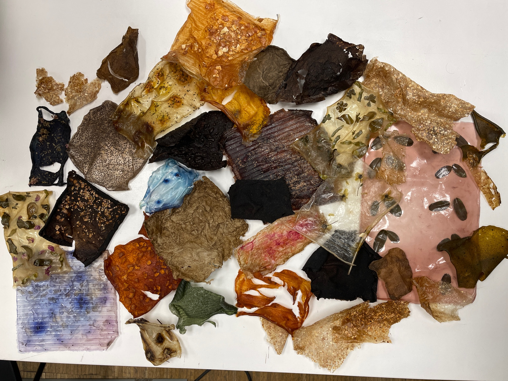

Studio
30 January 2022
Oscar Tomico
Starting off the new term, we were asked to reflect on the previous term and our learnings from it. After a break of nearly a month and not physically in class, I had time to disconnect for a bit and then reconnect with a refreshed mindset. Though my mindset is ready for a shift in the upcoming term, it is also coupled with anxiety. I know I want to dive deeper into projects and tie more meaning to them, but I’m very scared to take the first steps and question my choices in the direction I’m taking. The first term was filled with learning and growth both within the academic context and my personal life. The amount of time I’ve been in Barcelona so far marks the longest amount of time I’ve been out of my home country. I feel comfortable with the city now, the places I frequent, and most importantly the people. The things I have learned from MDEF this past term are many, but here I will highlight three and how they were new for me or different from what I had done in the past.
A key point in MDEF this past term was constantly challenging ourselves to reflect on ourselves and the projects we were doing. I tend to reflect casually throughout the day and think back about how my day or month went, but not as a weekly ritual that would be documented and shared specifically. As well, I wouldn’t necessarily document as much as I wanted to in the past, even though I knew that it was important in demonstrating and learning from my own process. It was cool to be able to practice documenting in different forms of words, video, drawing, sound, etc. The use of a digital design space with Miro was a really cool tool that I hope to use more actively in the coming term. Some weeks, I found it more difficult to reflect quickly right away. I think this because there was such a wealth of information to be absorbed that I wasn’t able to process it until some time later. However, the weekly reflections encouraged me to think about what I had learned and what I took/gained from it, and I’m glad to have a physical log of all my activity and thoughts throughout the term.
With each week’s seminar, we conducted mini projects. I felt it was a trimester full of prototyping in different ways. One of the most impactful for me was the almost useless machines in the tech beyond the myth track. By firstly taking apart machines, I was able to see physical components that I have never seen before. Building the hugging machine with some of these pieces, and using new tech tools we had learned was difficult but really rewarding for me seeing how it would all come together. With our personal projects and projects within design dialogues, I was prototyping with biomaterials, experimenting with varying textures, colors, additives, and types of food waste. The theoretical approach to design of first-person perspective is one we are constantly engaging with which I have found to be essential in the experimental type of design we are conducting. In past projects, I have never taken such a direct hands-on approach. I see how it can be really impactful, especially before taking a step back and trying to solve such big problems. A prime example of this where we first began using 1PP was with living with your own ideas, where I spent a day in the city barefoot. Instead of just speculating what it might be like or the types of feelings I would gain from it, doing it directly warranted a much more truthful and personal result.
Another big takeaway experienced within the master’s so far, linked with the culture of the space I’m in within IAAC, FabLab Barcelona, and Elisava, is the aspect of sharing and collaboration. Much of what we had done in the first term, whether it be small weekly table assignments, design dialogues groups, or presentations were done in groups. While I have worked in groups throughout my life, not often for such a prolonged period of time. Something I appreciate with the culture of the community around me is how much never doing anything alone is emphasized. How the concept of open-source and distributed design is such a force for good. Additionally, individual projects or videos, design spaces, and websites were always located on shared platforms and available for anyone to see. Instead of a mindset of being concerned about others taking ideas, a community fostered around collaboration was created where stronger ideas are generated when multiple minds come together. In the past, I haven’t always felt comfortable sharing my work with a group, but with this strategy of having everything out for display, it has pushed me to be more open and unafraid. I was also able to have the chance to run a workshop, which I never have before. In this way, I collaborated not only with my Case For Waste team members but also with members of the surrounding community who were interested in what I was doing.
Next steps- new project goals This upcoming term, I want to keep my interest going with biomaterials and waste, but with a slightly shifted focus. With the experience of last term under my belt and experimentation with biomaterials, I want to see HOW these products can be used, and in what context. Ideally, if I could combine many of my passions into the interventions and projects it would be meaningful for me. With this, I would like to see what I can work with in food waste. Specifically, with seafood waste. I would like to investigate what is available as waste in places like la St. Josep La Boqueria near my apartment, Mercabarna fish and seafood sector, and seafood restaurants. I am interested in seeing what types of biomaterials can be made from fish skin, chitosan from shellfish, mussels, etc. Using animal detritus such as pig bones and blood char pigment also interests me. In this experimentation, I don’t only want the focus to be on the materials themselves. I want to investigate the relationships we have between the living species, when they become our food, and how we can offer them a new life. Respect after domination. I want to think about the relation of food, bodies, and skin as a part of interspecies collaboration. How can we do this with creatures that are already dead? Is it possible? In addition, I want to understand the living species, especially sea life in the area and algae, if I am going to be using them as a source of material in combination of the biomaterials and waste. I want to question how humans can play a bigger role in being fosters of the environment in this way and creating a more circular and sustainable mindset within the realm which I have described. I am excited to see where this term takes me. The projects which we will be conducting, in addition to learning from Fab Academy and incorporating the two, will push the projects we will start and skills that I gained last term to the next level.